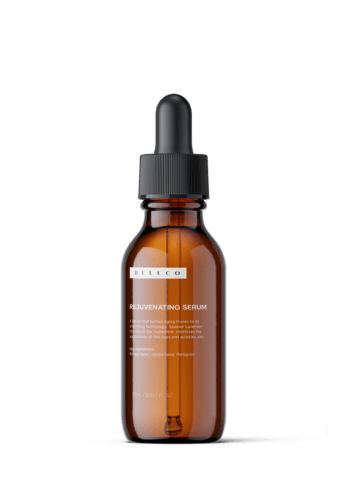

DAILY ROUTINE
All-natural Skincare
View collectionSHEA BUTTER HAND CREAM
A rich, moisturizing hand cream that smooths your hands, thanks to Shea butter and plant oils. The aluminum tube is fully recyclable. Aroma Citrus, woody, herbaceous Key ingredients Mandarin…
add to cart

Repairing Moisturizer
A thermal water-infused lotion that can be used before makeup, as it quickly absorbs, leaving a glistening, translucent finish. Shipping Information We accept returns. You can return…
add to cart


Rejuvenating Serum
A serum that battles aging thanks to its smoothing technology. Spanish Lavender, this serum star ingredient, minimizes the appearance of fine lines and wrinkles and…
add to cartResurrection Hand Oil
Resurrection Hand Oil does exactly what it promises: it brings your dry, flaky hands back to life, thanks to the four active ingredients; vitamins A…
add to cart